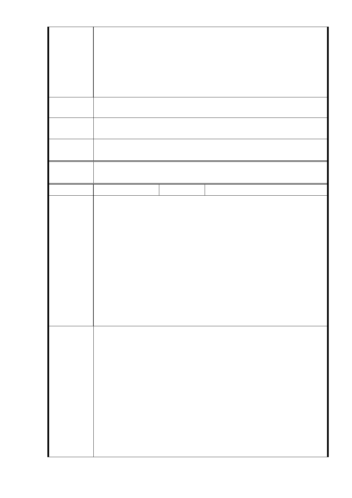

令規定，不得片面、恣意侵害人民權利。本公司依係
爭契約取得開發係爭土地權利，貴府應予尊重，不得
於前述爭議解決前，貿然展開修訂土地開發強度及土
地使用分區管制規定。
五、 謹此再次呼籲貴府於前述爭議解決前，立即停止辦理
廣慈博愛園區開發案之相關審議及核定程序，以免日
後衍生更多無謂爭議。
建議辦法
謹此再次呼籲貴府於前述爭議解決前，立即停止辦理廣慈博愛園
區開發案之相關審議及核定程序，以免日後衍生更多無謂爭議。
市
意
府回
應
見
同編號9答覆內容。
專案小組
審查結論
同編號 1。
委
決
員
會
議
同編號 1。
編號
10
陳情人 林○正
一、 反對台北市政府將社福用地容積率為 210％調高為 400％
。
理由：
1．現在空城的廣慈，面向四獸山，有兩座大廟寺（奉天宮、
慈惠堂），三所學校（瑠公國中、福德國小、松山家商）
。週休假日來朝山者眾多，人車已塞至福德街大道路口，
陳情理由
逢年過節更是嚴重堵塞至廣慈週邊。
2．福德街大道路以東路寬 15 米，福德街 84 巷林口街 80 巷
以北路寬 11 米，大道路林口街 80 巷以北路寬 15 米，以
上這三條路皆無法拓寬，但卻是整個廣慈出入的要道。
3．縱然將來有捷運信義線東延至廣慈站，但因廣慈強度的開
發，有超大量的人口進駐住，屆時人、車將無法負荷及抒
解，請重新規劃。
一、 反對台北市政府將社福用地容積率為 210％調高為 400％
。
二、 象山、四獸山綿延山巒步道，是 101 信義商圈的驕傲，廣
慈是信義區最後一塊空地，如果為了政績，增加財政收入
，而倉促草率的規劃，將會行不通暢 。開發案就不算成
功，週邊也不會有發展。
建 議 辦 法 三、 建請在社福用地北側（鄰林口街 80 巷）不可規劃興建老
人長照住宅，視 80 巷居民為二等公民。社會福利老人長
照住宅設在次要地段即可，在都會心的廣慈有點奢侈。
四、 汽車出入口－建物地下室汽車出入口，請勿設在僅 8 米寬
的林口街 80 巷內。
五、 廢氣排風口－請勿設向林口街 80 巷內側排放，影響居民
健康。
- 42 -